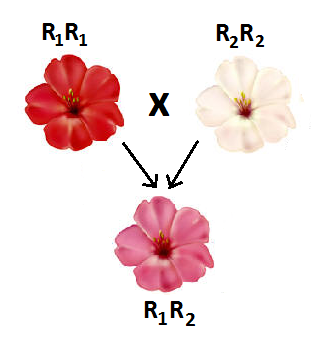
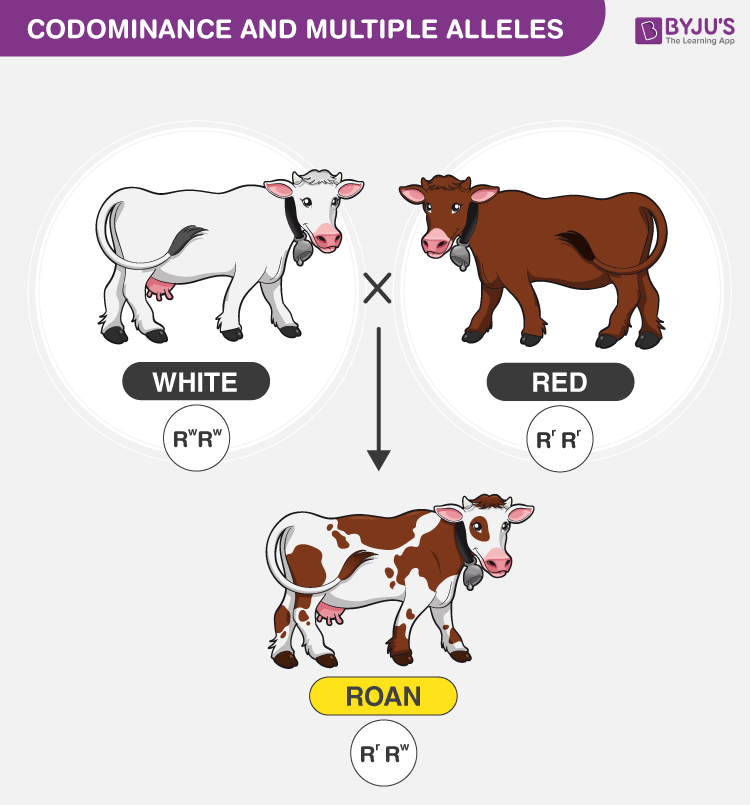
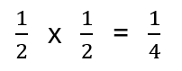
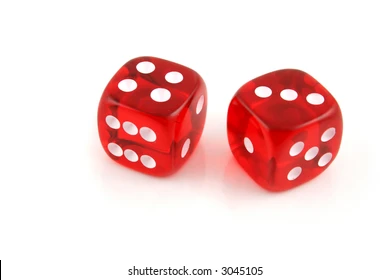
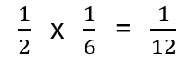
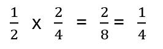

○Incomplete dominance
○Codominance
○Sex-linked traits
○Multiple alleles
○Blood types
Textbook pgs. 594-598 and 601-609
TOPIC 3:
OTHER MODES OF INHERITANCE
Other Modes of Inheritance
INCOMPLETE DOMINANCE
oOccurs when neither allele on a particular gene can mask the presence of the other (i.e. there is no true “dominant” allele)
oTwo alleles of the same variety are required to fully express their phenotype; heterozygotes thus display partial expression of each → we see an intermediate phenotype
oUpper and lowercase letters not used when representing incomplete dominance, rather two capitals letters.

Example:
In some varieties of flowering plants, petal colour is determined by two alleles which demonstrate incomplete dominance. One version of the allele, R1, encodes red flowers, while another version of the allele, R2, encodes white flowers.
a.Determine the genotype of each of the following plants:
●A plant with red flowers
●A plant with pink flowers
●A plant with white flowers
b.A plant with red flowers is crossed with a plant with pink flowers. What proportion of offspring will also have pink flowers?
R1R1
R1R2
R2R2
R1R1 x R1R2
R1 R2 ½ = 0.50 will have pink flowers
R1 R1R1 R1R2
Example:
In some varieties of flowering plants, petal colour is determined by two alleles which demonstrate incomplete dominance. One version of the allele, R1, encodes red flowers, while another version of the allele, R2, encodes white flowers.
c. Is it possible for the cross described in part b to produce offspring with white flowers? Explain.
No, it is not. The only way an offspring is white is if it is R2R2, which means both parents would have to have a copy of the R2 allele.
Another example:
Sickle-cell anemia is one form of incomplete dominance where heterozygotes actually have increased evolutionary fitness under certain circumstances…

Sickle-cell anemia (incomplete dominance):
If a homozygous man with normal blood cells has children with a heterozygous woman, what is the probability that their children will be born with severe anemia?
What percentage of their children will be more likely to survive if exposed to malaria?
0.00
½ → 50%
R1R1 x R1R2
R1 R2
R1 R1R1 R1R2

CODOMINANCE
oBoth alleles on a particular gene are fully expressed (i.e. two equally “dominant” alleles)
oBoth alleles require just one copy to fully express their phenotype; heterozygotes thus express one allele in certain cells and the opposing allele in others


The ‘roan’ coloring in cattle is an example of codominance. The white allele and red allele both get expressed when present.

Example:
In other varieties of flowering plants, petal colour is determined by two alleles which demonstrate codominance. One version of the allele, R1, encodes red flowers, while another version of the allele, R2, encodes white flowers.
a.Determine the phenotype of each of the following plants:
●R1R1
●R1R2
●R2R2
b.A plant with red flowers is crossed with a heterozygous plant. What proportion of offspring will also have red flowers?
Red
Red and white
White
R1R1 x R1R2
R1 R2 ½ = 0.50 will have red flowers
R1 R1R1 R1R2
Example:
Roan coloring is an example of codominance between the white and red coloring alleles. Determine the genotypic and phenotypic ratios of the F1 generation when a roan cow is crossed with a roan bull.
Let R1 represent the red allele and R2 represent the white allele. So our cross is:
R1R2 x R1R2
R1 R2
R1 R1R1 R1R2
R2 R1R2 R2R2
Genotypic ratio:
1 : 2 : 1
R1R1 : R1R2 : R2R2
Phenotypic ratio:
1 : 2 : 1
red : roan : white
MULTIPLE ALLELES
Often, more than two alleles may exist for a particular trait (i.e. although an organism only inherits two alleles for each gene, many different alleles can exist within the population)
In humans, for example, a single gene determines blood type. However, three different alleles exist:
IA, IB, and i
Note: the gene is designated “I” or “i” depending on the presence of an antigen. IA thus indicates the presence of an A antigen on red blood cells, and IB indicates the presence of a B antigen. The absence of an antigen is marked by “i”
Different combinations of these three alleles produce four different phenotypes, which are commonly referred to as A, B, AB, or O.
Alleles for blood type:
IA, IB, and i
A = IAIA or IAi
B = IBIB or IBi
AB = IAIB
O = ii
Alleles IA and IB are codominant, but both are dominant over the recessive allele i.
Order of Dominance: IA = IB > i

Multiple Alleles
EXAMPLE 1:
A woman homozygous for blood type A has a child with a man heterozygous for blood type B. What is the probability that their child has the blood type AB?
½ of offspring will
have the AB blood type

Before we move on to the next example problem, let’s review some math around probability…
To calculate the probability of two independent events, we must multiply the probability of each event happening individually.
Example 1: The probability of toss a coin getting two heads in a row is:
Tossing a head
Tossing a head
Tossing two heads in a row
Example 2: The probability of tossing a head and rolling a 3.
Tossing a head
Rolling a 3
Tossing a head and rolling a three



EXAMPLE 2:
A woman with blood type B has a child with a man with blood type AB. The woman’s father had blood type O. What is the probability that their child is a son and has the blood type B?
Since the woman’s blood type is B, her genotype can be either IBIB or IBi. However, since we are told that her father has blood type O, his genotype must be ii and therefore must have passed on a i allele to his daughter. So the woman’s genotype must be IBi.
Therefore our cross is:
IBi x IAIB
IA IB
IB IAIB IBIB
i IAi IBi
Now we must remember that blood type and sex are independent events since they are not on the same chromosome. So we must multiply the individual probabilities:
Being a boy
Having blood type B
Being a boy and having blood type B
Simplified probability
